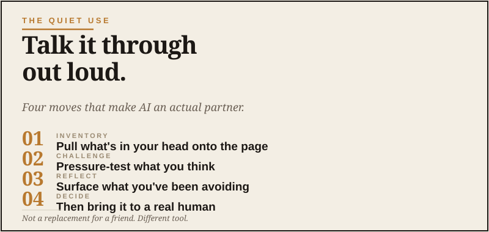

The quiet use
Think out loud, on the page.

Here’s a thing about being a grown man that nobody talks about much. You don’t have a lot of people you can really think out loud with.
Your spouse is the closest, but you can’t bring her every half-formed thought because that’s exhausting for both of you. I love my wife too much to make her sit through every “what if” that wanders through my head before coffee. Your buddies are great, but most of the time you’re catching up about kids and work and trucks, not workshopping a career pivot. A therapist costs $200 and takes a week to schedule. Your dad, if you’re lucky enough to still have him, has his own things going on.
So when you’re wrestling with something — a job change, a business idea, a family situation, a health decision, a quiet sense that something isn’t fitting anymore — most of the time you just chew on it alone. You walk it off. You sleep on it. You let it stew until it either resolves itself or doesn’t.
I do some of my best thinking on long drives or walks with Luna, but even then, my brain can turn into a bad group chat: same three thoughts, repeated badly, with no moderator.
This is where AI does something genuinely useful that most people haven’t figured out yet. It can be a thinking partner. Not a therapist. Not an oracle. A patient, judgment-free, infinitely available collaborator who can help you sort through your own thoughts faster than you would alone.
It’s not that the AI knows the answer. It’s that the conversation forces you to think more clearly than you would have alone.
What this is, and what it isn’t
Let me be clear about what I mean. I’m not talking about AI as a substitute for human relationships or professional help. If you’re dealing with serious mental health stuff, a clinical situation, or a decision with major legal or medical stakes, you need real humans for that. Don’t outsource your life to a text box. That’s not capability; that’s just a weird new way to avoid responsibility.
What I’m talking about is the everyday volume of thinking grown men do quietly: “Am I making the right call here? Am I missing something? Why does this feel off? What would I tell a friend in my situation?”
For all of that, AI is remarkably good. Here’s why.
Why a chatbot beats your own brain at this
Three reasons.
First, when you think alone, you tend to circle. The same thoughts come back in slightly different forms. I’ve done entire miles on a trail thinking I was solving something, only to realize I was just replaying the same argument in a different hat. AI breaks the loop by asking you something specific you didn’t expect.
Second, when you think alone, you skip steps you take for granted. Talking to AI forces you to articulate the situation in plain language. The act of putting it into words usually clarifies things.
Third, AI doesn’t have skin in the game. It’s not worried about hurting your feelings, protecting your ego, or maintaining a relationship with you. It’ll push back on your assumptions in a way most people in your life can’t or won’t.
The opening prompt that works
Don’t start by dumping the whole situation. Start by inviting the AI into the role of a thinking partner.
Then describe the situation in your own words. As much or as little as you want. The AI will start asking questions.
The questions are usually the valuable part. Not the AI’s eventual analysis. The questions force you to surface things you hadn’t articulated to yourself.
Where this gets genuinely useful
Career and business decisions. Should you take the new role? Leave the company? Start the side project? AI can help you map the trade-offs without the emotional charge of talking to people who have opinions about your life.
Difficult conversations. Need to have a hard talk with a kid, a parent, an employee, a partner? Use AI to think through what you actually want to say, what you’re afraid of, and what the other person might be hearing that you’re not intending.
Long-term planning. What does the next ten years actually look like? AI can help you think through the financial, geographic, family, and lifestyle pieces in a way that would take you weeks to work through alone.
Stuck-ness. When you know something isn’t right but can’t name it. AI is good at asking the questions that surface the thing you’ve been avoiding.
Sorting out values. What matters most to you right now? What used to matter that doesn’t anymore? What are you optimizing for that you should stop optimizing for?
The follow-ups that elevate the conversation
Once you’re in a good thinking conversation, these prompts deepen it:
This one is uncannily effective. The AI will name something — sometimes accurately, sometimes adjacent — and either way it’ll move your thinking forward.
This is the move when you need real perspective.
This is the move when you suspect you’re looking at the wrong problem.
The danger to be aware of
One real warning. AI is built to be helpful, which means it leans toward being agreeable. If you go in looking for validation, it’ll often give it to you, even when you’d be better served by pushback.
The fix is to ask for pushback explicitly. Tell it to be skeptical. Tell it to argue with you. Tell it to play devil’s advocate. Without those instructions, you might get a friendly conversation that doesn’t actually challenge anything.
The other warning is to remember this is a tool, not a relationship. Don’t use AI as a substitute for actual human conversation. Use it to clarify your own thinking so the human conversations you have are better.
The thing about midlife
I’ll be honest about why I think this matters.
There’s a stretch in life — somewhere in your 40s, 50s, or early 60s — where the questions get bigger and the people available to think them through with often get fewer. You’re past the easy years where every decision was about the next career step or the next house. You’re into the harder questions about what the next chapter looks like, what you want to spend your remaining productive years on, what kind of legacy you’re leaving.
Those questions deserve real thinking. Not three minutes in the truck on the way to Home Depot while you’re also trying to remember sprinkler fittings. Real, structured, uninterrupted thinking.
AI can help with that. Not by giving you the answers. By being patient enough to sit with you while you find them.
That’s a useful tool to have, even if it’s not what most of the AI conversation is about.